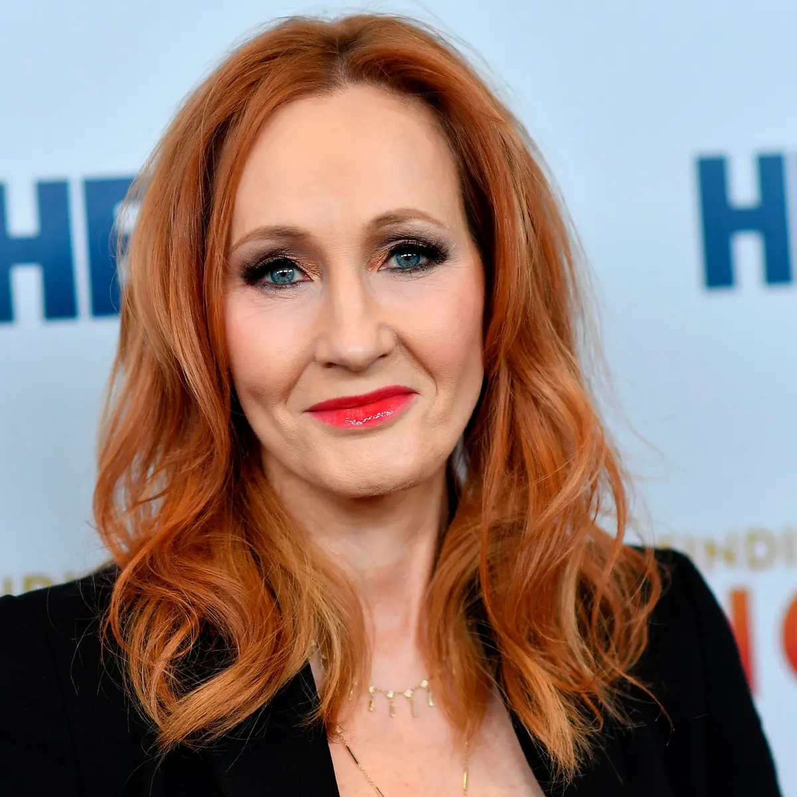
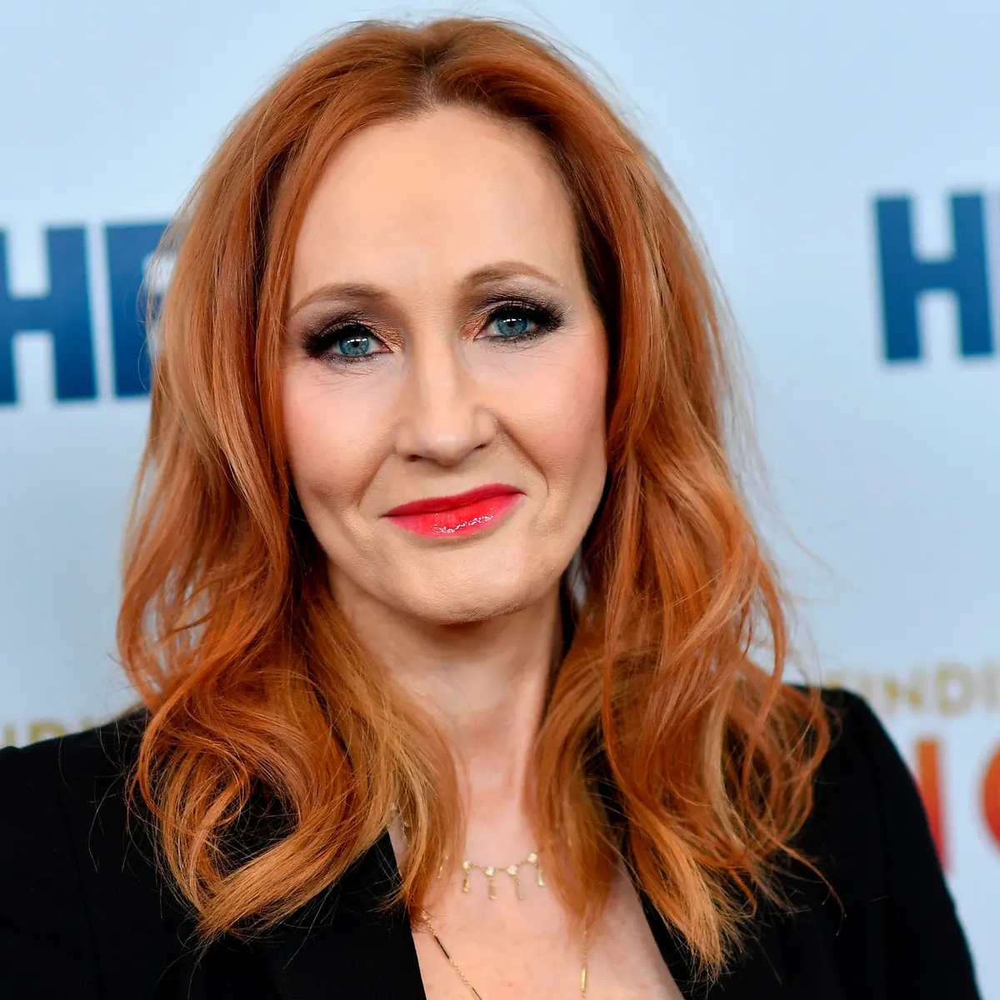

My favorite hobby:
Reading
About
I like to read during my free time. My favorite book genre is fiction, because I like the adventure and action in fiction books, as well as the imagination. I also like writing my own books as well, since I like imagining fictional journeys.
My favorite book

My favorite book is the series "Spy School", by Stuart Gibbs. It is about a young teenager, Ben Ripley, who enrolled into a spy school, in which he learns to become a spy. His mission is to take down the evil organization SPYDER, and what ever other organization out there plotting for the end of the world. My favorite character in "Spy School" is Erica, a 16 year old, talented teenager who has been learning to spy in Spy School for her whole life. She is extremly skilled in many aspects: she can tie difficult knots, disassemble bombs, remember a whole entire book and map easily, fight off a full grown adult singlehandedly, and has an amazing acting ability. She is very cold and distant from other people, so people nicknamed her "Ice Queen". In the series of "Spy School", she always helps Ben, the main character of the story, on his missions. Ben is her best friend, though even despite that, she barely ever communicates to him unless on missions or occasionally just to check in or tell him something. She's also friends with Zoe, who was the one who nicknamed her "Ice Queen". Erica is described as the most beautiful girl Ben has ever seen in his life. Erica has raven black hair and ice blue eyes, as described in the book. According to spy school, Erica has started training to become a spy at a very young age, as she came from a long line of succesful, legendary spies
My inspiration
Click on the image to view more information.
 
